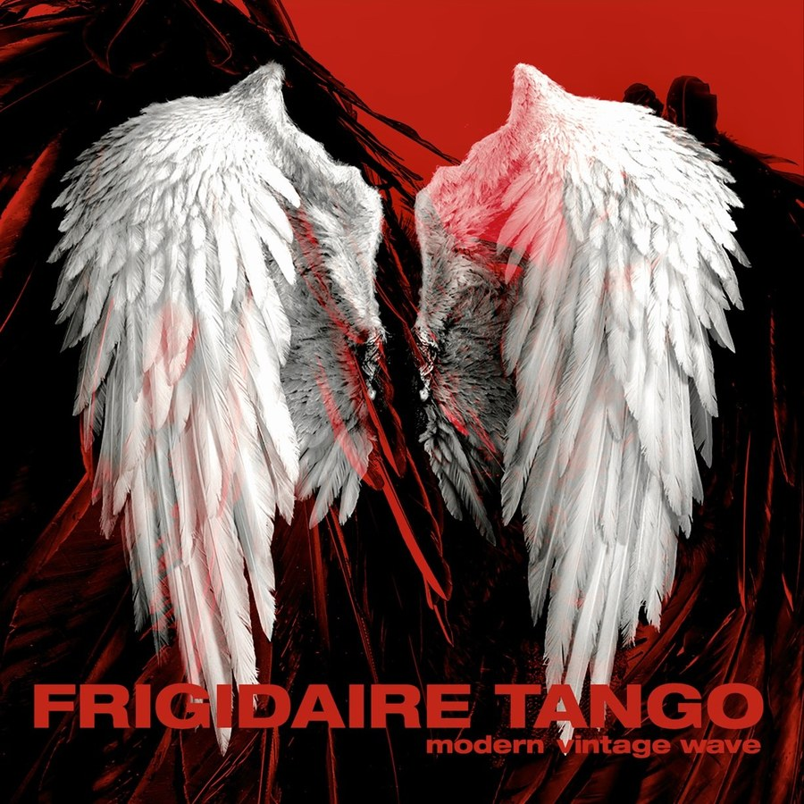
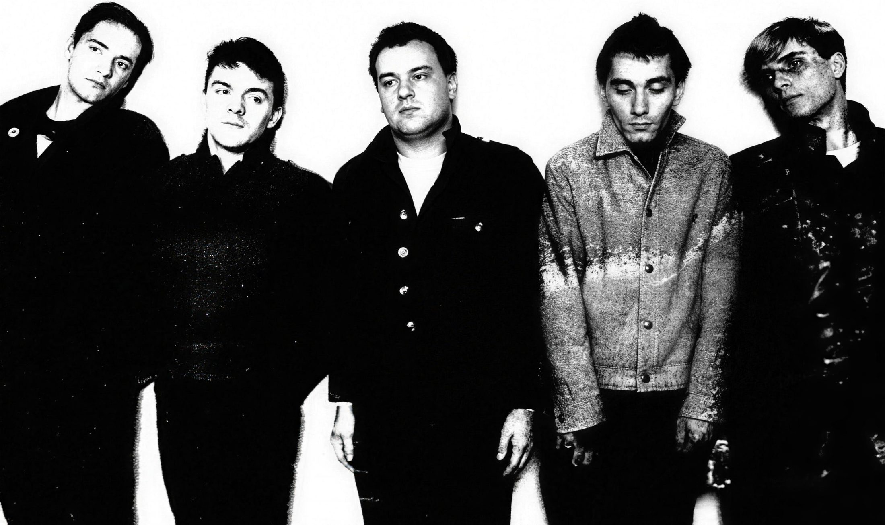
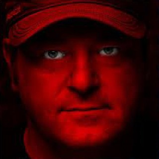
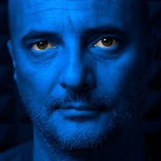

Modern Vintage Wave
10 unreleased songs 2008–2025
Ten songs picked from about thirty recorded over the last fifteen years, in Italian and English. It includes the singles "Fears" and "Non sei raggiungibile" and a tribute to Adrian Borland of The Sound. Released on Psicolabel, 2026.
Tracklist
- I creatori
- Non sei raggiungibile
- Timeless Future
- Life Is a Little Trip
- Deadline Body
- Fears
- Bloody Glory
- Adrian
- L'ombra della tua grazia (Adrian Borland)
- Considerations
Details
- Label
- Psicolabel
- Year
- 2026
- Formats
- Vinyl LP, CD and digital
- Vinyl cat. no.
- PL00FT2025
Where to buy
Also on CD and on all major digital stores. Stream it on Spotify or Deezer above.
Contact
Email info@frigidairetango.com · Instagram · Facebook

Frigidaire Tango



One of the first Italian new wave bands. They made their debut in 1981, played their last show in 1986, and have been back together since 2005.
Explore
Story
From the Outkids in 1977 to Modern Vintage Wave.
Open →The band
Stage names, real names and who played on the records.
Open →Music
The discography, from The Cock to today.
Open →Videos
I Creatori, the 1983 promos and the RAI documentary.
Open →Photos
Press photos and the launch night.
Open →Press
Reviews and interviews, linked to the sources.
Open →Quick answers
The band in brief
Who are Frigidaire Tango?
Frigidaire Tango are an Italian new wave band from Bassano del Grappa. Carlo Casale and Stefano Dal Col started it in 1977 as the Outkids, and it became Frigidaire Tango once keyboardist Marco Breda joined.
What was Frigidaire Tango's first album?
Their first LP was The Cock, released in 1981 on Young Records. In 2010 the French magazine Tsugi named it one of the 100 essential lesser-known rock LPs.
When did Frigidaire Tango split and reunite?
The band played its last show in July 1986 on Treviso's city walls. The 2006–07 box set The Freezer Box (Alma Records) brought the old material back, and the band started playing again. L'illusione del volo (2009) was their first album in Italian.
What is Frigidaire Tango's latest album?
Modern Vintage Wave, released in 2026 on Psicolabel.